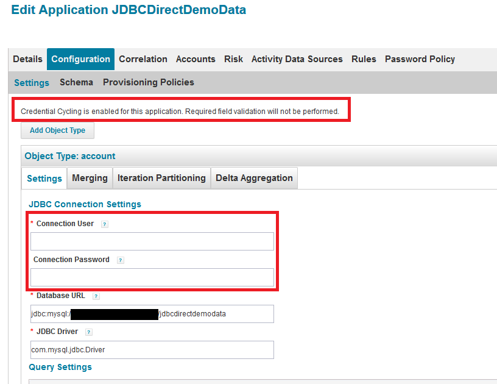

CyberArk Credential Cycling Configuration
This section provides details on configuring credential cycling for use with CyberArk.
Prerequisites for CyberArk Credential Cycling
These prerequisites are specific to CyberArk, and are in addition to the general prerequisites for credential cycling outlined in Credential Cycling Configuration.
-
Install CyberArk's Credential Provider API on the server hosting your IdentityIQ instance. The Credential Provider API enables passwords that are stored in CyberArk Digital Vaults to be retrieved by IdentityIQ.
If you are using multiple hosts, install the Credential Provider API on all of your task hosts. If you are using UI hosts for actions such as test connections, previewing account information, running targeted aggregations, managing accounts, processing access requests, or business processes configured to run in the foreground, the Credential Provider API must be installed on those hosts as well.
Note that the Credential Provider API is not the same as CyberArk's Central Credential Provider.
For version 8.5 of IdentityIQ, use version 12.1 or higher of all CyberArk components. -
JavaPasswordSDK.jar: IdentityIQ distributes a version of the JavaPasswordSDK.jar for the CyberArk integration. This jar contains several classes that allow IdentityIQ to communicate with the CyberArk's Credential Provider.
CyberArk customers should confirm the appropriate version of the library for their version of CyberArk, and obtain it from the vendor if necessary.
-
Obtain application IDs, corresponding safe names, and folder names from your CyberArk administrator.
Application Hash Value Authentication for CyberArk
IdentityIQ uses the "Application Hash Value" method of authenticating to the CyberArk API; other methods of authentication will not work.
Verify connectivity to the CyberArk Digital Vault using the command line clipasswordsdk before attempting to construct the attributes of the Credential Cycling Configuration object.
Note: For more information, refer to CyberArk's Credential Provider documentation and ASCP Implementation Guide.
First, ensure that you have extracted the pam-credential.jar file from the identityiq.war file.
If you have deployed IdentityIQ using the "exploded" form of the war file, you don't need to take any extra steps to extract the pam-credential.jar file; however, if you are not using this deployment strategy, you will have to extract the pam-credential.jar from the identityiq.war file, perform the steps below, then repackage the pam-credential.jar back into the identityiq.war file.
-
Run the CyberArk utility JavaAIMGetAppInfo (under
\CyberArk\ApplicationPasswordProvider\Utils):
(Unix)java -jar javaaimgetappinfo.jar GetHash -AppExecutablesPattern=/{path to identityiq directory}/WEB-INF/lib/pam-credential.jar
(Windows)java -jar JavaAIMGetAppInfo.jar GetHash /AppExecutablesPattern=C:\{path to identityiq directory}\WEB-INF\lib\pam-credential.jar -
Copy the generated hash to the vault:
-
Log in to the CyberArk Web Application.
-
Navigate to Applications > SailpointIIQ > Authentication > Add Hash and paste the generated hash.
-
-
Restart the CyberArk Privileged Session Managers service to make the configuration change to take place immediately. Alternatively you can wait approximately 3 minutes to allow the CyberArk Privileged Session Manager to read the new configuration.
Working with the CyberArk Configuration Template
IdentityIQ provides a template to use as a guide for creating your CyberArk configuration. The template defines:
-
Which of your applications in IdentityIQ will use credential cycling.
-
The CyberArk source values to use for credentials.
-
How these source values map to your IdentityIQ application fields for authentication.
In the Credential Source section, you configure:
-
The name of your CyberArk safe. This information comes from CyberArk.
-
The folder where your secure credentials are stored. This information comes from CyberArk. Use "root" here if you do not use folders.
-
An appId, which is a unique identifier, used for authorization, which the CyberArk Credential Provider creates when it is installed on a host. This information comes from CyberArk.
Note: These values can also be added in the Credential Association section, and settings in the Credential Association section will override values in the Credential Source section. Configuring applications in the Credential Association section is useful if you need to define multiple applications in the configuration file. See the CyberArk Configuration Template - Configured Example section below for an example of this type of structure.
In the Credential Association section, you configure
-
The name(s) of your IdentityIQ applications that will use credential cycling.
-
The attributes for your application's username, and the corresponding CyberArk username that provides the secure username credential to the application at runtime.
-
The attributes for your application's password, and the corresponding CyberArk password that provides the secure password to use for the application at runtime.
-
A CyberArk object, which is the name identifier for the password or certificate data object in the CyberArk container.
-
Any application-specific overrides to the overall CyberArk settings.
Note: The template provided with IdentityIQ includes individual sections for CyberArk, BeyondTrust, and a solution-neutral mapping option. Remove the sections that you will not use before importing the template.
?xml version='1.0' encoding='UTF-8'?>
<!DOCTYPE sailpoint PUBLIC "sailpoint.dtd" "sailpoint.dtd">
<sailpoint>
<Configuration name="CredentialConfiguration">
<Attributes>
<Map>
<entry key="sources">
<value>
<List>
<CredentialSource credentialClass="sailpoint.pam.credential.CyberArkCredentialManager" name="cyberark">
<!-- The attributes in this map are used mainly to communicate with CyberArk.
Any values here can be overriden by values of the same name in the attributes
map of each credential association. Required attributes must either be configured
here or in every credential source. Attributes:
Required: safe
Required: folder
Required: appId
Required: object
-->
<Attributes>
<Map>
<entry key="safe" value="cyber_ark_safe_name"/>
<entry key="folder" value="cyber_ark_folder_name"/>
<entry key="appId" value="cyber_ark_app_ID"/>
</Map>
</Attributes>
<!-- *** Application Configuration -->
<CredentialAssociation applicationName="application_name"
attributeName="application_username_attribute"
credentialAttributeName="CyberArk_username_attribute">
<!-- *** Attribute values go here. These attributes can be used to override values from
*** above, or can be left out if not needed -->
<Attributes>
<Map>
<entry key="object" value="object_value"/>
</Map>
</Attributes>
</CredentialAssociation>
</CredentialSource>
</List>
</value>
</entry>
</Map>
</Attributes>
</Configuration>
</sailpoint>
Note that this example includes only the CyberArk-specific elements in the template. See the example above or the configuration template supplied with IdentityIQ for additional elements required in the template.
In this example, application details are specified in the CredentialAssociation element. The values are defined as follows:
-
JDBCDirectDemoData is the application in IdentityIQ that will use credential cycling.
-
SailPointIdentityIQ is the unique application identifier in CyberArk for this IdentityIQ instance.
-
Demodata is the specific safe within CyberArk which contains credentials for the JDBCDirectDemoData system.
-
Database-MySQL-JDBCDirDemoData represents the collection of attributes in CyberArk which store password and user name information for the JDBCDirectDemoData application.
-
The user
attributeNamekey is the attribute in the JDBCDirectDemoData application in IdentityIQ that holds the username for connecting to the JDBCDirectDemoData system. The PassProps.UsernamecredentialAttributeNamekey is the corresponding attribute in CyberArk which holds the username credential, which will be passed to the IdentityIQ user attribute. -
The password
attributeNamekey is the attribute in the JDBCDirectDemoData application in IdentityIQ that contains the password for connecting to the JDBCDirectDemoData system. The PasswordcredentialAttributeNamekey is the corresponding attribute in CyberArk which holds the password credential, which will be passed to the IdentityIQ password attribute.
<CredentialSource credentialClass="sailpoint.pam.credential.CyberArkCredentialManager" name="cyberark">
<CredentialAssociation applicationName="JDBCDirectDemoData" attributeName="password" credentialAttributeName="Password">
<Attributes>
<Map>
<entry key="appId" value="SailpointIdentityIQ"/>
<entry key="folder" value="root"/>
<entry key="object" value="Database-MySQL-JDBCDirDemoData"/>
<entry key="safe" value="Demodata"/>
</Map>
</Attributes>
</CredentialAssociation>
<CredentialAssociation applicationName="JDBCDirectDemoData" attributeName="user" credentialAttributeName="PassProps.Username">
<Attributes>
<Map>
<entry key="appId" value="SailpointIdentityIQ"/>
<entry key="folder" value="root"/>
<entry key="object" value="Database-MySQL-JDBCDirDemoData"/>
<entry key="safe" value="Demodata"/>
</Map>
</Attributes>
</CredentialAssociation>
</CredentialSource>
Here is how credential cycling, as configured using the template above, will appear in IdentityIQ in the JDBCDirectDemoData application. The message indicates that the Connection User and Connection Password, which are marked with asterisks indicating that they are required, do not need to be supplied here because they will be provided through credential cycling.

Configuring Multiple Applications in the CyberArk Configuration Template
A single configuration template is used to configure all applications that will use CyberArk credential cycling.
To configure multiple applications in the template, use Credential Associations elements to define each of them. See the CyberArk Configuration Template - Configured Example section above for an example.
Special Considerations for Active Directory
A special syntax is used to replace Active Directory Application attributes when using credential cycling. The feature uses SailPoint's MapUtil API. Here is an example:
<CredentialSource credentialClass="sailpoint.pam.credential.CyberArkCredentialManager" name="cyberark">
<Attributes>
<Map>
<entry key="appId" value="CyberArk"/>
<entry key="folder" value="root"/>
<entry key="object" value="ActiveDirectory"/>
<entry key="safe" value="MicrosoftSafe"/>
</Map>
</Attributes>
<CredentialAssociation applicationName="ActiveDirectory" attributeName="domainSettings[domainNetBiosName=DOMAINNAME].password" credentialAttributeName="password"/>
</CredentialSource>
Additional Resources
Video: IdentityIQ CyberArk Integration Demo